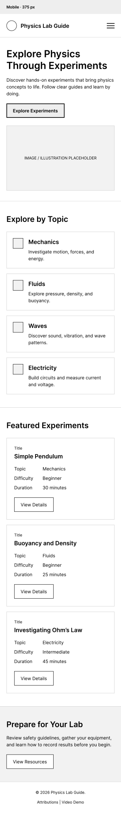
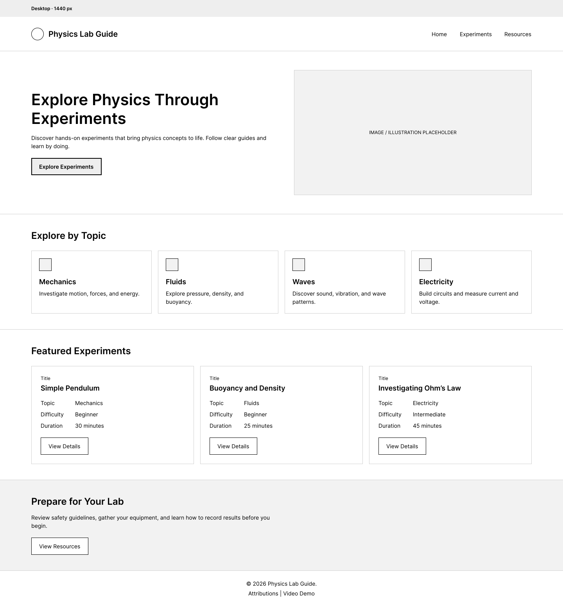

Deep Navy
#172A46
Used for the main header, navigation, headings, and other important interface elements.
Individual Project Site Plan
I chose the name Physics Lab Guide because the website is designed to help physics students find and review laboratory experiments in a simple and organized way. The name clearly communicates the purpose of the website and makes it easy for students to understand what they can find on the site.
Optional domain: physicslabguide.org
Physics Lab Guide is a website created to help physics students explore and prepare for laboratory experiments.
The site will provide information about different physics experiments from topics such as mechanics, fluids, waves, electricity, and other introductory physics topics. Each experiment will include information such as its purpose, materials, difficulty level, physics topic, and a brief description.
The website will also include interactive features that allow users to explore, filter, and view additional information about experiments. A contact or suggestion form will allow students to submit questions or suggest laboratory topics.
The main goal of the website is to provide students with a simple and organized resource that can help them understand what an experiment is about and prepare before attending a laboratory session.
The following scenarios represent questions that students may have when visiting the website:
The website will use a simple color scheme inspired by physics, science, and laboratory environments. The colors will provide sufficient contrast to support readability and accessibility.
#172A46
Used for the main header, navigation, headings, and other important interface elements.
#0F766E
Used for buttons, links, interactive elements, icons, and visual accents.
#E8F3F8
Used for cards, information sections, and secondary backgrounds.
#FFFFFF
Used as the primary page background and for text placed on dark backgrounds.
#1F2937
Used for paragraphs and general body text to maintain comfortable readability.
The main combination of Deep Navy, Teal, Light Blue, White, and Dark Gray will be used consistently throughout the website.
Poppins will be used for headings, navigation links, buttons, page titles, and other important interface elements. Its clean geometric appearance will help create a modern science-oriented visual style.
Open Sans will be used for paragraphs, descriptions, forms, experiment information, and general body text. It provides good readability for longer sections of content.
The home page will use a responsive layout that changes according to the available screen size.

The mobile layout will contain a header with the site name and hamburger navigation, an introductory section, featured experiments, physics topic categories, a call-to-action, and a footer.

The desktop layout will contain a header with horizontal navigation, a hero section, featured experiments displayed in a responsive grid, physics topic categories, additional information, and a footer.
The wireframes will be created as simple black-and-white sketches before the detailed visual design is developed.